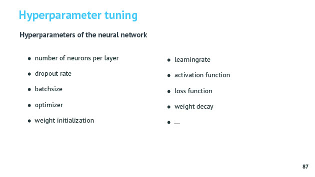

Handson Keras en Tensorflow
Tags: AI andere
Date: 2021-03-06
Type: Cursus topic
Related:
Source :
Notities
Bij NN moet je one hot encoding toepassen op de labels !!! python : to_categorical()
bij classificatie met softmax maak je best gebruik van losses.categorical_crossentropy : drukt uit hoe groot de fout is van het model
metrics = ter info gegevens (bijv accuracy) heeft geen invloed op traning zelf, enkel als feedback naar gebruiker toe.
als je geheugen foutmeldingen krijgt met gpu werking moet je je batchsize verkleinen.
validation_split = hoeveel % samples te gebruiken om validatie te doen
validation data wordt niet gebruikt om NN te trainen maar je gebruikt het wel om het beste NN te kiezen.
wat doen om beter percentage voor NN te krijgen ? Dropout aanpassen, meer neuronen in hiddenlayers, ...
loss curve

Je gebruikt loss curve om te zien wat optimaal moment is voor early stopping (als loss voor validatieset terug stijgt, wil zeggen dat het model traningsdata van buiten heeft geleerd > overfitting)
Early stopping
zie ook Early stopping
Early stopping zorgt ervoor dat training afgebroken wordt als loss op test (validatie) terug stijgt.
Gevaar kan je in een tijdelijk optimum zitten/plateau en is het best dan je even wacht. Dat je patience toevoegt en dat er nog een paar epochs getraind wordt vooraleer af te breken.

Nadeel is dat je dan een model hebt dat net terug wat hoger scoort. (optimaal punt zat op 90 maar model is nog even verder getraind geweest door patience parameter tot 110 maar hierdoor ook hoger geeindigd qua loss)
modelcheckpoint
Oplossing hiervoor is om modelcheckpint te gebruik en het model te saven op dat optimaal punt en dat nadien terug opvragen.
model summary

python : model.summary()
Hieruit kan je bijv afleiden dat eerste layer uit 3100 neuronen bestaat = 30 input parameters x 100 weights (verbindingen naar hidden layer van 100 neuronen) + 100 biases.
hyperparameter search
Je kan ook Gridsearch doen op NN voor al de parameters in te stellen.
GridSearchCV zal dan bijv wel 1000 NN trainen om optimale hyperparameters te kiezen. Dit kan wel enkel uren of dagen duren !!!
Advies : start met iets te groot NN. Kijk naar Loss grafiek. Als loss niet zakt voor training dan staat dropout misschien te hoog of NN heeft te weining neuronen of learningrate staat te hoog (loss grafiek is heel grillig)


Vragen
Q: Wat moet je doen als je foutmeldingen krijgt over je geheugen bij het trainen van een NN ?
A: Je moet de batchsize verkleinen waardoor je minder geheugen nodig zult hebben om de verschillende bijstellingen van de weights bij te houden vooraleer nieuwe weights te berekenen.
Q: Wat moet je doen als je een slecht (= hoog) loss blijft hebben bij het trainen van NN model ?
A: Als loss niet zakt dan staat dropout misschien te hoog, of heeft NN te weinig neuronen in hidden layers, of de learning rate staat te hoog (als grafiek heel grillig is)
Q: Wat leert deze model summary ons ?
A: Hieruit kan je bijv afleiden dat eerste layer uit 3100 neuronen bestaat = 30 input parameters x 100 weights (verbindingen naar hidden layer van 100 neuronen) + 100 biases.